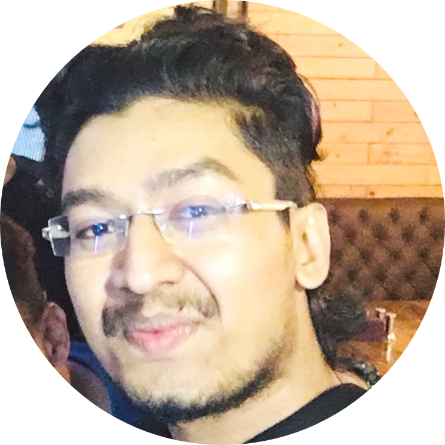

|  |
Prathammesh KallankeMaster's Student Department of Computer Science |
I am currently pursuing my Master’s in computer science, which would help me pursue my interest and passion in more depth and will also help me in my further research in Computer science, Artificial intelligence, Machine Learning, Data Science and softwares. Later on I want to work in a company which provides a challenging environment of excellence for me to display and use my skills and talent to add to the company’s goals and research.
From a very young age, I developed an interest in computers. A sense of inquisitiveness lingered; I wanted to learn and know more about hardware and software applications used, and how they worked. In addition, I became an avid reader of computer-related books and texts. I also dabbled with a course in coding. My passion for computers became more purposeful during my schooling years. I enjoyed Computer Science classes and scored highest marks in the subject. I have fond memories of attending the Computer Science class, and proactively asking questions, posing my doubts, and curiously discussing about hardware and software topics with our teaching faculty. The more I informed I became about computers, their functions, and applications, the more determined I became to excel in the subject – in school and beyond. My enthusiasm for Computer Science prompted me to participate in the National Cyber Olympiad Exam. I secured first rank nationally.
| Dates | Work |
|---|---|
| Jun 2018 - May 2019 | Software Developer INFOTECH RESOURCES Description |
| Aug 2017 - May 2018 | Software Engineer Intern INFOTECH RESOURCES Description |
Journal name: IJARIIE (International Journal of Advanced Research and Innovative Ideas in Education).
Paper Title: Performance Evaluation System for Employee Appraisal.
Paper Type: Report.
Issue: Volume.4 Issue.6